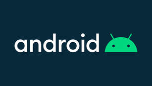

Android

Android is a mobile operating system developed by google for smartphones. It is based on a modified version of the Linux kernel. Yes my friends ! Linux is the heart of Android. However The first version of Android started seeing its path in 2007 and the final commercial version of android was released in September 2008. Since then this operating system started leading the mobile platform.
Android's default user interface is mainly based on direct manipulation, using touch inputs that loosely correspond to real-world actions, like swiping, tapping, pinching, and reverse pinching to manipulate on-screen objects, along with a virtual keyboard. Game controllers and full-size physical keyboards are supported via Bluetooth or USB. The response to user input is designed to be immediate and provides a fluid touch interface, often using the vibration capabilities of the device to provide haptic feedback to the user. Internal hardware, such as accelerometers, gyroscopes and proximity sensors are used by some applications to respond to additional user actions, for example adjusting the screen from portrait to landscape depending on how the device is oriented, or allowing the user to steer a vehicle in a racing game by rotating the device, simulating control of a steering wheel.
The main hardware platform for Android is ARM (the ARMv7 and ARMv8-A architectures), with x86 and x86-64 architectures also officially supported in later versions of Android. The unofficial Android-x86 project provided support for x86 architectures ahead of the official support. The ARMv5TE and MIPS32/64 architectures were also historically supported but removed in later Android releases. Since 2012, Android devices with Intel processors began to appear, including phones and tablets. While gaining support for 64-bit platforms, Android was first made to run on 64-bit x86 and then on ARM64. Since Android 5.0 "Lollipop", 64-bit variants of all platforms are supported in addition to the 32-bit variants.
Android and the Linux Kernel
Android, a mobile operating system developed by Google for smartphones, is built on a modified version of the Linux kernel. The Linux kernel serves as the foundation of Android, providing essential functionalities and capabilities to the operating system. This strong association with Linux not only ensures robustness and security but also allows Android to leverage the vast ecosystem of Linux-based tools and technologies.
The integration of the Linux kernel into Android has been a key factor in the success and widespread adoption of the operating system. By utilizing the Linux kernel, Android benefits from features such as multitasking, memory management, hardware support, and security mechanisms. This deep integration with Linux has enabled Android to evolve into a versatile and powerful platform that caters to a wide range of devices and user needs.
The relationship between Android and the Linux kernel continues to be pivotal in shaping the future of mobile computing. As both technologies advance and evolve, the synergy between Android and the Linux kernel drives innovation, performance enhancements, and new possibilities in the realm of mobile devices. The seamless integration of Android with the Linux kernel underscores the importance of open-source collaboration and the strength of combining two powerful technologies.